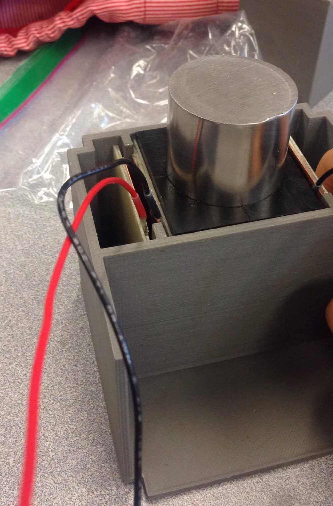
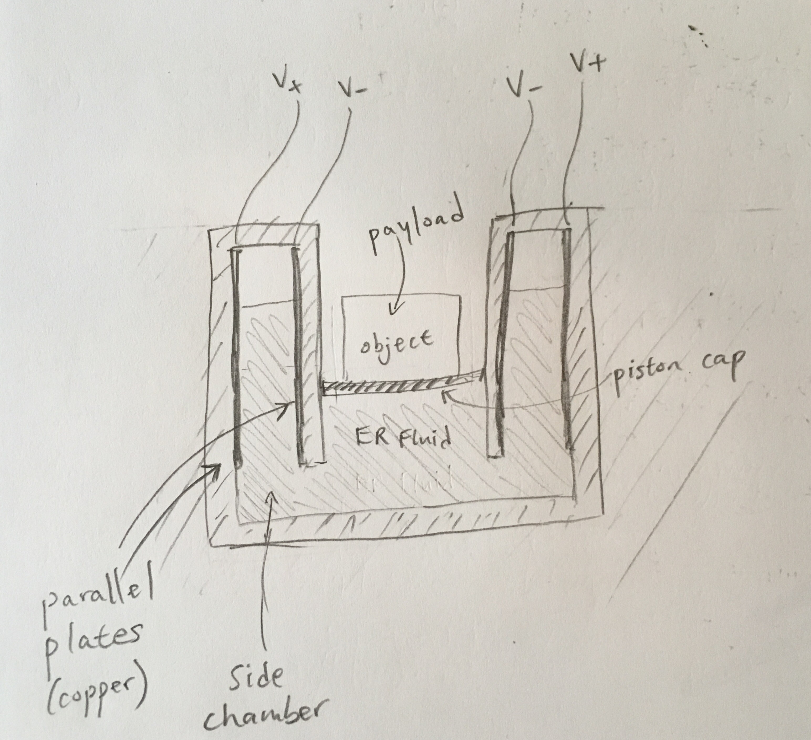
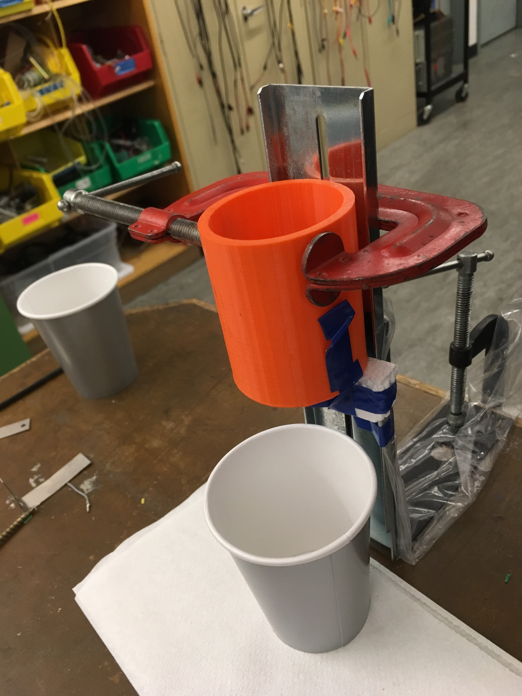
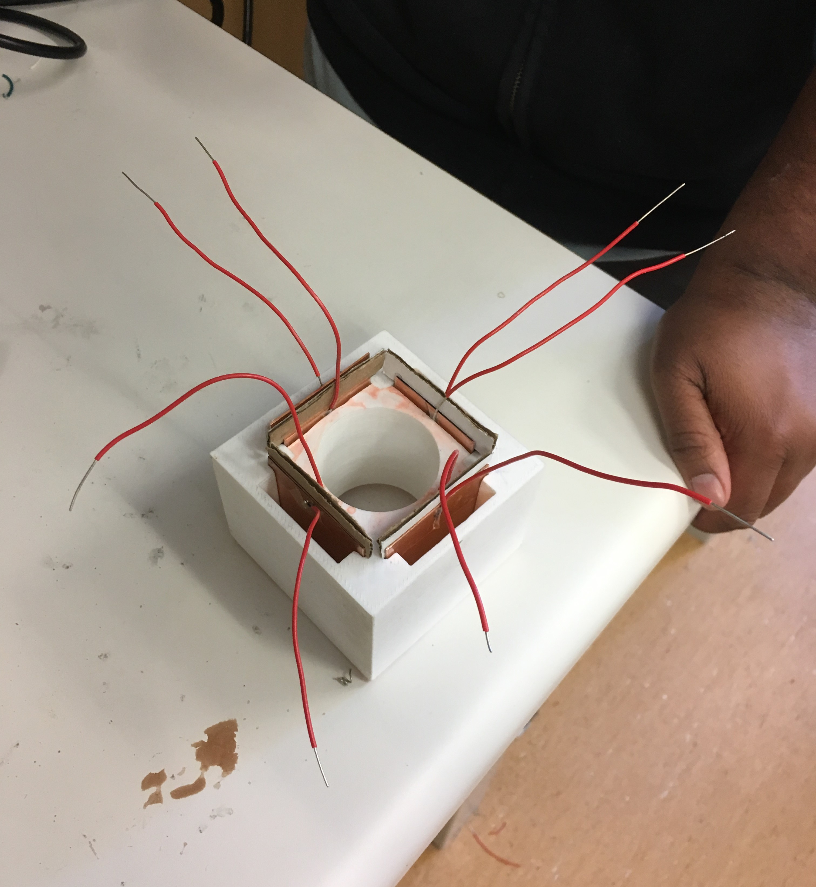

UBC Rocket:
EMECS Payload Subteam
EMECS Payload Subteam
I worked in a team to build the Electromechanical Experimental
Control System (EMECS). Our goal was to create a system that
would stabilize a rocket payload during launch, as large accelerations
and vibrations can damage delicate payloads.
After a number of failed designs, we found success using electrorheological (ER) fluid as our stabilizing mechanism. ER fluid changes viscosity based on applied voltage, allowing us to actively control the amount by which it dampens movement.
Top skills and knowledge gained:
After a number of failed designs, we found success using electrorheological (ER) fluid as our stabilizing mechanism. ER fluid changes viscosity based on applied voltage, allowing us to actively control the amount by which it dampens movement.
Top skills and knowledge gained:
- Building test jigs, test equipment, and low-fidelity prototypes.
- Designing experiments to characterize material/fluid properties.
- Soldering, sheet metal shearing machine, Autodesk Inventor.
- How electrorheological fluids work, battery selection.
- Conducting literature research to inform design decisions.
- Importance of structuring the design process.
Final System
Our final system is in the photo below.
It consists of a main chamber, which is where we would put an object
that would be transported to space. For our demonstration system, we used
the cylindrical steel mass shown as a "dummy payload". The mass flots
on top of the ER fluid.
The side chambers contain ER fluid and have conducting walls, to which we apply a voltage (applied via the attached leads shown) to control the ER fluid.
Below: the physical system. Scroll down for an explanation of the mechanism.  The damping mechanism is an idea I thought of after reading research literature on ER fluid stabilizer systems. In this design, the object we would like to stabilize floats on top of ER fluid (we separate the two with a piston cap) in a main chamber. Side chambers with conducting walls allow the ER fluid to be displaced from the main chamber.
In simplest terms, our stabilizing mechanism works like this:
- Acceleration causes the object to move downwards in the main chamber, causing fluid in the side chambers to displace up.
- As this happens, we apply a voltage (200+ V) across the parallel plates to create regions of high viscosity in the ER fluid.
- This impedes the fluid's ability to displace up the side chambers, causing the object's downward movement to be impeded. We thus achieve damping.
A sketch of our system:  Note also that our system is only designed to damp downwards movements, which are the principal movements during rocket launch. Our system is not designed to handle damping in cases where the payload is ejected from rocket or experiences large decelerations when a parachute is deployed.
Experimentation and Prototyping
My main role involved validating our design's ability to control
ER fluid. This ability depends on a large number of factors, including
fluid properties, applied voltage, distance between parallel plates, and area
of application. As a result, I devised a number of tests, experiment jigs, and
low-fidelity prototypes.
Notable work:
- Used Autodesk Inventor to model and 3D print a Ford viscosity testing cup because ordering one was too expensive. I found the required dimensions online.
- Devised experiments and built jigs to characterize viscosity and voltage response of different ER fluids, and find the best fluid to use.
- Used the tests to define voltage and mechanical requirements for the final system.
- Built mechanical system prototypes (machining and hand tools, soldering)
- Researching literature to understand ER fluid.
Below: A test jig I assembled for an experiment. The orange object is the Ford cup I designed. We would measure the time it takes for a specific ER fluid to drain. I also made the ER fluid: in our case, I used starch mixed in silicone oil, and conducted tests to find the best mixture ratio.  Below: A late-stage prototype I helped build. My team mate modelled and 3D printed the white plastic body. I made and installed the parallel plates and soldered on the wires. We found that the wires would not adhere to the copper plates well, so we later used epoxy to secure them.  A video of our first successful test.